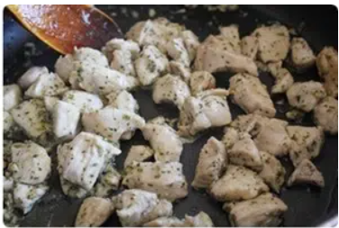
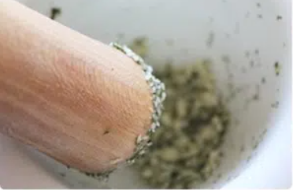
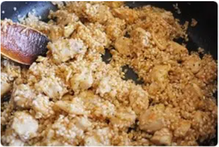

Paso a paso
- SALTEAMOS EL POLLO Pimeramente cortamos el pollo en cubos ponemos un poco de aceite en una paella y salteamos el pollo troceado.
- MAJADO DE ESPECIAS Y TÓMATE TRITURADOS Incoporamos un majado que hacemos en el mortero con ajos, el perejil y la sal. Dejamos que cocine un poco y añadimos el tomate triturado.
- INCORPORAMOS EL ARROZ Y LA CÚRCUMA Incoroporamos el arroz y lo salteamos por dos minutos y le añadimos la cúrcuma
- AÑADIMOS AGUA Y DEJAMOS COCINAR Por último añadimos 6 tazas de agua o caldo de pollo y dejamos cocinar a fuego suave por 18 minutos.






RESULTADO FINAL